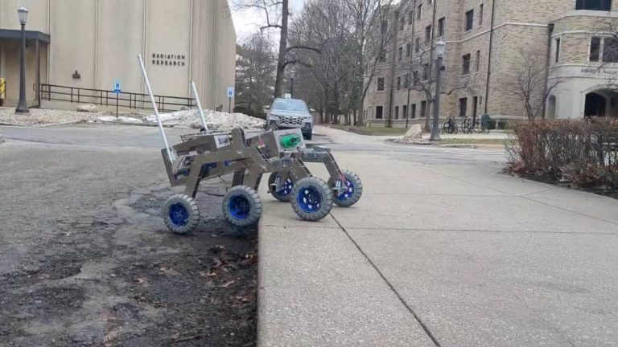
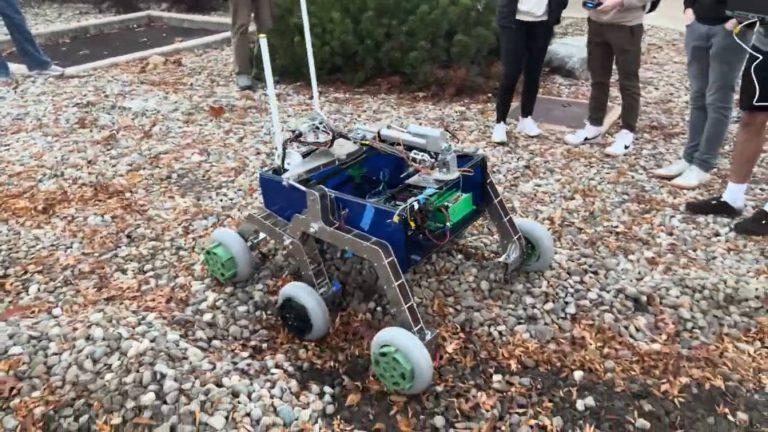
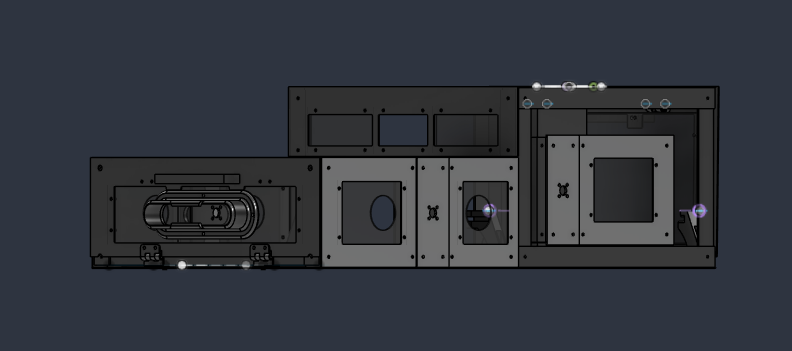
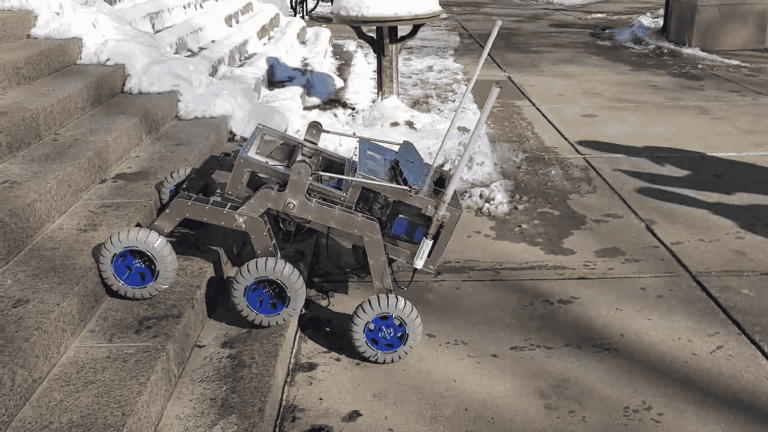
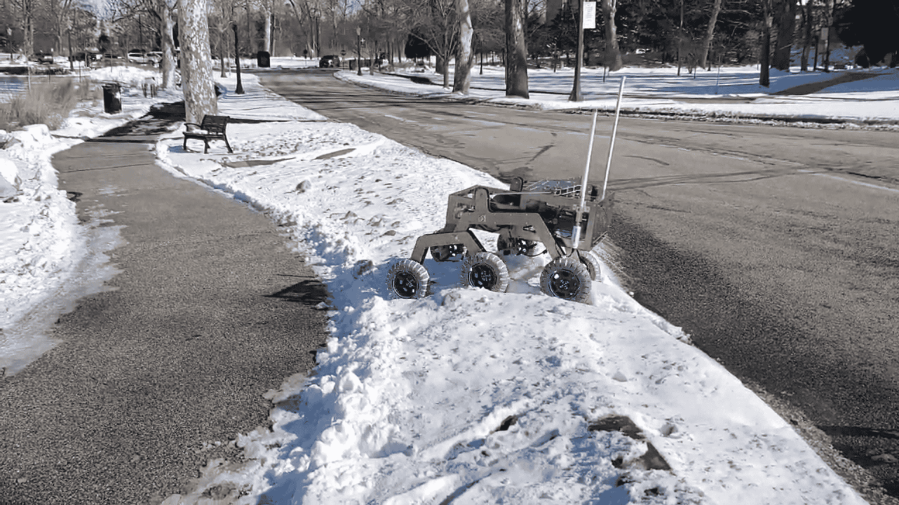

Rover Central Housing Unit

Led the central housing unit redesign for a multidisciplinary Mars rover, improving structural capacity, payload modularity, and integration with the suspension.
About Domer Rover
Domer Rover is a multidisciplinary student team at the University of Notre Dame developing a rover for the University Rover Challenge. The project brings together mechanical, electrical, autonomy, and communications work to build an integrated vehicle with interchangeable arm and science payloads.
Project Overview
I led the redesign and manufacture of Domer Rover’s central housing unit (CHU), the structure that accommodates the rover’s electronics, computing, power distribution, and wiring while supporting interchangeable mission payloads. The project required coordinating mechanical design with the needs of the electrical, autonomy, and communications teams.
As Project Manager for our multidisciplinary University Rover Challenge team, I helped guide design decisions around mission requirements, subsystem interactions, and the time available for manufacturing and integration.
Redesigning the Structure
The earlier acrylic housing could support only about 35 lb and restricted mounting and service access for the growing electronics and mission payloads. The challenge was to create a substantially stronger central structure without sacrificing modularity or internal packaging.
I redesigned the central housing unit as a new 6061 aluminum tubing-and-plate assembly, refining its geometry, mounting interfaces, and internal arrangement. Physical load testing verified a 70 lb capacity—double the previous structure.

Modular Payload Integration
The redesigned CHU has an open front section with a latching interface that allows the arm module or science module to be attached as needed. This arrangement lets the team change the rover’s mission configuration while retaining the same central housing.
The housing also accommodates the Jetson Nano computer, batteries, cooling equipment, LiDAR, camera, and wiring. Integrating these components required considering their mounting needs, accessibility, and connections to the rover’s other subsystems.

Balance and Suspension Integration
Terrain testing exposed front-wheel lift. We measured the assembled rover’s center of mass using a fulcrum test and used the result to guide rocker-bogie suspension mount placement.
The revised mount arrangement eliminated the front-wheel lift observed during testing. I also optimized the CHU height to increase ground clearance from 24 to 30 cm while accounting for gearbox stress when the robotic arm was extended and preserving the drill’s useful reach.

Adapting to Changing Requirements
Subsequent component changes introduced new requirements for the housing. I helped evaluate whether to rebuild the structure or adapt the existing design, considering the expected benefits and the schedule available.
Working with the team, I helped select targeted modifications that addressed the evolving requirements while retaining the existing housing. This required collaborative judgment across subsystems and balancing design improvements with practical integration needs.


The assembled rover in operation, showing the CHU integrated with the rocker-bogie suspension.
Outcome and validation
Suspension placement refinements eliminated front-wheel lift observed in terrain testing, and the height adjustment increased ground clearance by 25%. The result reflects structural redesign, fabrication, physical testing, and coordination across mechanical, electrical, autonomy, and communications teams.